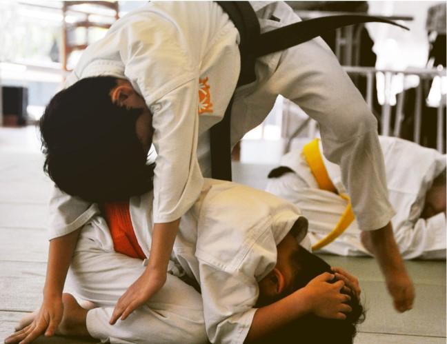

At aikiForest, we believe that every child is unique. Classes are deliberately kept small with instructor-to-student ratio of 1:7 to ensure quality classroom interaction.
Through our colourfully illustrated Big Books, we tell simple yet interesting stories to the young ones. Each story reveals a fundamental Aikido movement or technique. Our creative & age-appropriate curriculum & pedagogy is simply unrivalled, with a range of teaching materials that few martial arts schools can match.
We make learning easy & fun.